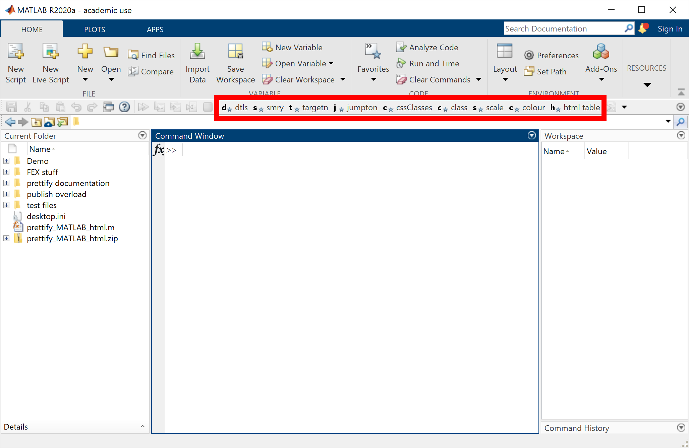
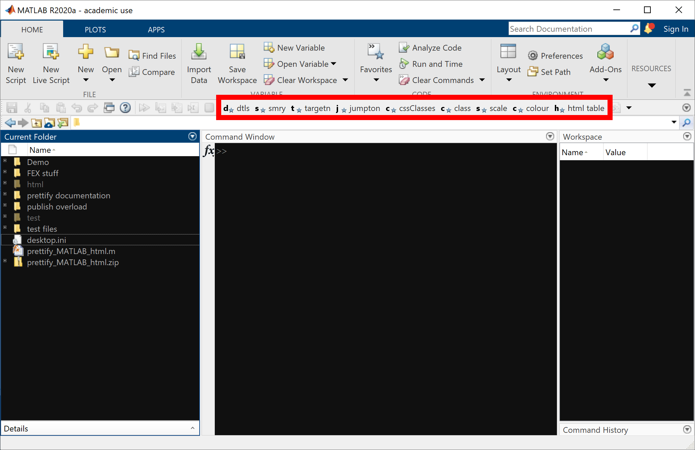
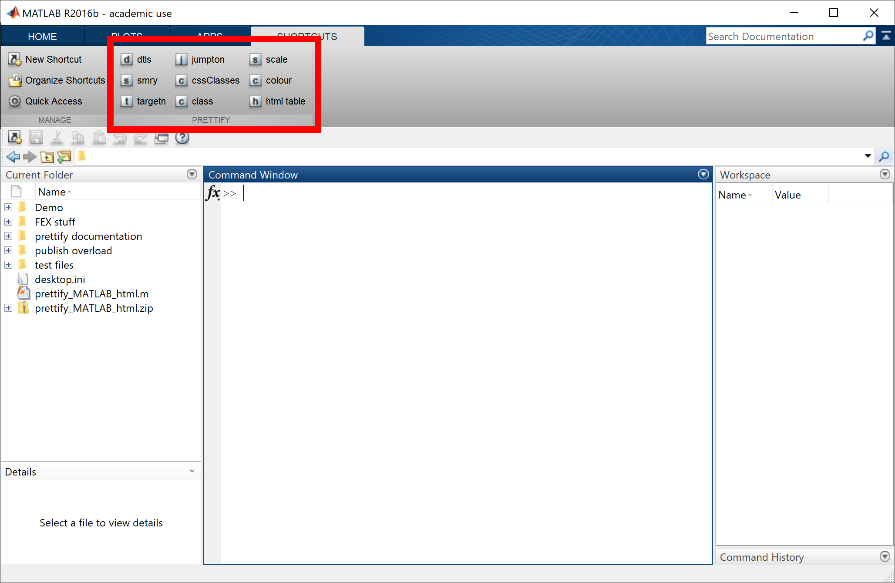
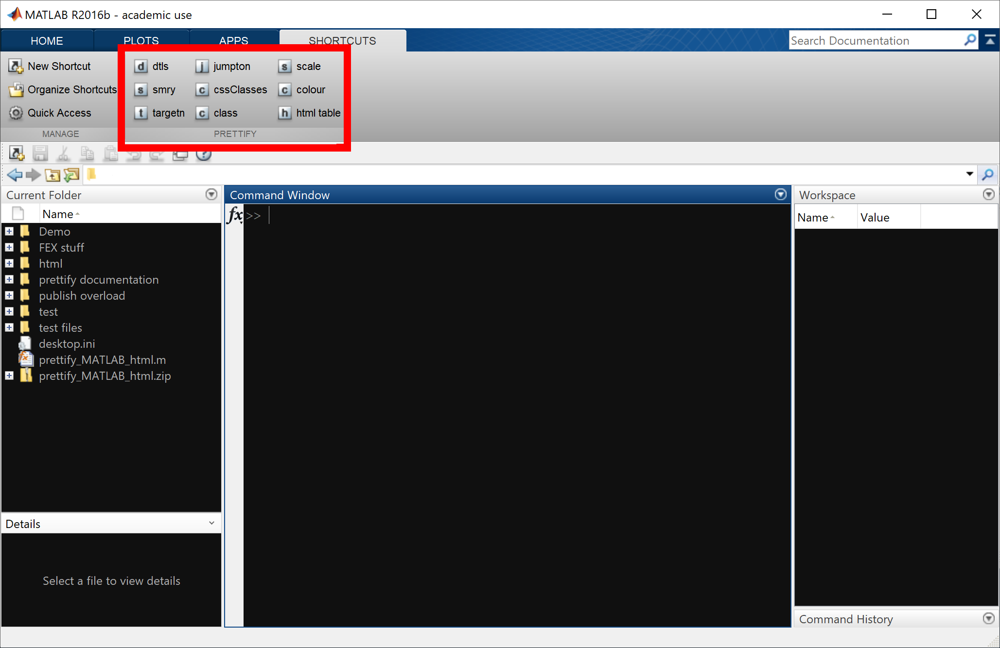
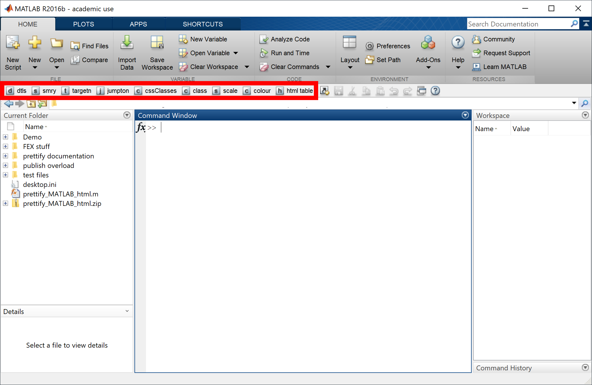
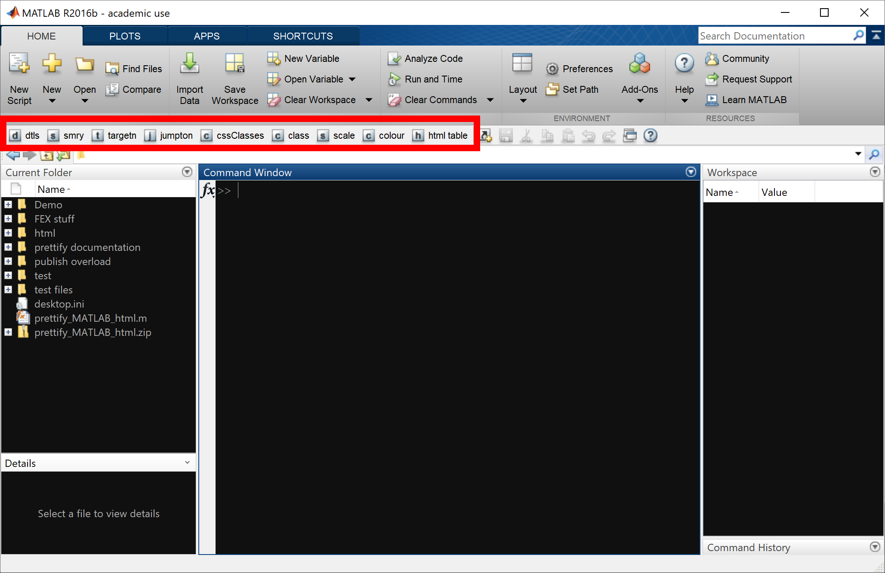
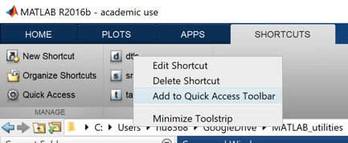
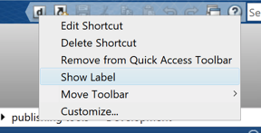
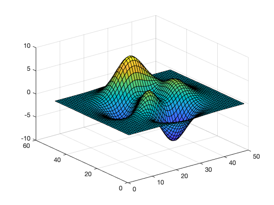
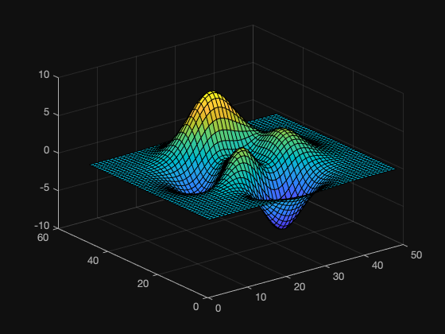

Prettify MATLAB html
prettify_MATLAB_html processes html files generated by MATLAB's publish function, adding additional features such as disclosure boxes (that can be expanded/collapsed with a mouse-click), and expand-all/collapse-all links that expand/collapse multiple disclosure boxes simultaneously. This makes the document more closely resemble "official" MATLAB help files. It also:
- Allows you to easily create internal page links.
- Provides colour and size formatting options for text.
- Provides a table style to use when creating tables with html.
- Automatically enhances the formatting of images and inline code.
- Allows you to easily create CSS classes and use those classes on elements of the page.
- Provides the option to apply a "dark" theme to the page.
Contents
- Installation
- Usage
- Custom elements to use in the source .m file
- Examples:
- Control spacing using [brx], [bottomMarginx], and [delsp] tags
- Create disclosure boxes using the [dtls] and [smry] tags
- Create headings using [h2] tags
- Create internal page links
- Using custom CSS classes
- Change font size using the [scalex] tag
- Change font colour using the [colour#] tag
- More information about themes
- Adding tags using the Toolbar buttons
- Creating a table with the "MATLAB-Help" style
- Automatic enhancements
- Advanced usage
- More examples
Installation
Files and folders
prettify_MATLAB_html is provided in the prettify_MATLAB_html.m file. Along with this file are the folders publish overload and prettify documentation. These folders should be placed in the same folder as prettify_MATLAB_html.m.
About the publish overload folder
.m file: publish.m . The folder publish overload should only be added to the MATLAB path if you wish to overload the built-in publish function. Overloading the publish function will automatically process html files, generated when you press "Publish" on the toolbar in the Editor, with prettify_MATLAB_html.
You can also configure the
publish overload using the overloadPublish function input.
About the prettify documentation folder
prettify_MATLAB_html. You do not need to add it to the MATLAB path, but if it is on the path, that won't cause any problems.
Adding helper buttons to the Quick-Access Toolbar
Most of the features of prettify_MATLAB_html require the use of additional tags in the source .m file that is to be published.
To make adding of these tags as easy as possible, you can add buttons to the Quick-Access Toolbar. The process of adding the buttons is slightly different depending upon the version of MATLAB you are running. For any version, the action only needs to be performed once (buttons are permanently added (can be manually removed) and will remain in place across relaunches of MATLAB).
Click here for instructions on how to use these toolbar buttons.
Adding the Toolbar buttons in MATLAB versions 2018a and later
In MATLAB versions 2018a and later, running prettify_MATLAB_html([],[],[],true) adds nine buttons to the Quick-Access Toolbar as highlighted in the screenshot below (The Quick-Access Toolbar has been moved from the default location by right-clicking and choosing Move Toolbar > Below Toolstrip):

Adding the Toolbar buttons in MATLAB versions prior to 2018a
In MATLAB versions prior to 2018a, running prettify_MATLAB_html([],[],[],true) adds nine buttons to the Shortcuts Toolbar as shown below:

In order to access these shortcuts from the Editor, they must appear in the Quick-Access Toolbar. You should receive a message at the MATLAB command line asking you to restart in order to add the shortcuts to the Quick-Access Toolbar. After a restart, the shortcuts will be in the Quick-Access Toolbar as highlighted in the screenshot below (The Quick-Access Toolbar has been moved from the default location by right-clicking and choosing Move Toolbar > Below Toolstrip):

If you receive a message asking you to add them manually, you can do so by right-clicking each in turn and selecting Add to Quick Access Toolbar :

Once added to the Toolbar, you may wish to show the labels, by right-clicking on each new button in the Quick-Access Toolbar and selecting Show Label:

NOTE : Currently, the shortcuts are added to the Quick-Access Toolbar by editing MATLAB's xml preference file for the Quick-Access Toolbar. MATLAB only reads this file at launch, which is why adding the shortcuts to Quick-Access requires a restart. If anyone knows how to programmatically add buttons to the Quick-Access Toolbar in MATLAB versions prior to 2018a, please let me know.
Configure publish overload and add Toolbar buttons with one function call
publish overload and add Toolbar buttons with one function call:
prettify_MATLAB_html([], [], true, true)
Upgrading from an earlier version
prettify_MATLAB_html that has new buttons for the toolbar, and you have already added the Toolbar buttons for the earlier version, you can run prettify_MATLAB_html([],[],[],true) and only the new buttons will be added.
Usage
There are five valid call syntaxes for prettify_MATLAB_html :
1. prettify_MATLAB_html(inputhtmlFile)
2. prettify_MATLAB_html(inputhtmlFile, verbose)
3. prettify_MATLAB_html([], [], overloadPublish)
4. prettify_MATLAB_html([], [], [], addCommandsToToolbar)
5. prettify_MATLAB_html([], [], overloadPublish, addCommandsToToolbar)
inputhtmlFile — specify the file to be processed
character vector
verbose — control printing of messages to MATLAB command line
logical
prettify_MATLAB_html is run. Set to false to suppress the messages.
overloadPublish — automatically process html files when you press the publish button
logical
This is an optional input to configure an overload for MATLAB's
publish function, so that when you press "Publish" in the toolbar of a MATLAB edit window, the generated HTML will automatically be processed by prettify_MATLAB_html. This only needs to be done once per MATLAB session. If you put a call to:
prettify_MATLAB_html([], [], true);
in your
startup.m file, publish will get overloaded every time you run MATLAB. set overloadPublish to false to stop overloading publish.
addCommandsToToolbar — add helper buttons to Quick-Access Toolbar
logical
This is an optional input that when set to true, adds helper buttons to the Quick-Access toolbar. This action only needs to be performed once (buttons are permanently added (can be manually removed) and will remain in place across relaunches of MATLAB)
To leave the
publish overload setting in its current state, set the third input to empty:
prettify_MATLAB_html([], [], [], true)
Alternatively, you can configure the
publish overload and add Toolbar buttons with one function call:
prettify_MATLAB_html([], [], true, true)
Custom elements to use in the source .m file
Markup "tags"
Most prettify_MATLAB_html features require the use of additional markup "tags" in the original source .m file, for example to indicate where you want the disclosure boxes. You can click on the tag names in the table below to jump to examples of what these tags do and how to use them. If you add the helper buttons to the Toolbar, you can insert the [dtls], [smry], [targetn], [jumpton], [cssClasses], [class.class-name], [scalex], and [colour#] tags using those buttons.
| Tag(s) | Purpose |
|---|---|
| [br] | Place anywhere to introduce an HTML line break. |
| [brx] | Insert a line break with specified pixel height x; useful for creating spacing between lines where any empty line is too large a gap, or a large gap is required. |
| [bottomMarginx] | Specify the size of the bottom margin of the current paragraph, in pixels x; useful for controlling spacing between text and inserted elements such as lists, images, embedded html, etc. |
| [delsp] | Control spacing when using publish text markup
*...* (bold), _..._ (italic), or
|...| (monospaced). In order to function
correctly, text that you markup with *, _, or | must often
be preceded by a space, but this can sometimes cause word-spacing issues. To solve this
problem, the [delsp] tag deletes a space character immediately following this
tag. |
| [dtls] ... [/dtls] | Wrapped around a block of text will create a normally-open disclosure box around that text. These tags must be accompanied by a set of [smry] ... [/smry] tags (see below). |
| [smry] ... [/smry] | These wrap around text inside a [dtls] ... [/dtls] block. The text wrapped in the [smry] ... [/smry] block is always displayed, regardless of the state of the disclosure arrow. The opening [smry] tag must immediately follow the opening [dtls] tag. |
| [h2] ... [/h2]
[h2.CElink] ... [/h2] |
Used to create a second-level heading. This is the heading style used by publish for section headings, so these tags enable you to
insert headings without starting a new section. If the heading is inserted above [dtls] boxes, you can choose whether or not the heading
includes a collapse/expand link. The [h2] ... [/h2] tags create a heading with no link, whilst headings created with
[h2.CElink] ... [/h2] tags include a link |
| [targetn] | Where n is any integer, e.g. [target1], [target14]. Used to insert a link target for in-page linking. A link to the target is created using the [jumpton] ... [/jumpto] tags (see below). Note that no closing tag is required. |
| [jumpton] ... [/jumpto] | These wrap around any text that you wish to serve as an in-page link to a target that you have specified with a [targetn] tag. |
| [cssClasses] ... [/cssClasses] | These wrap around text where you define CSS classes that you wish to apply to other parts of the page using the [class.class-name] ... [/class] tags (see below). |
| [class.class-name] ... [/class] | These wrap around text to which you wish to apply one of your CSS classes that are defined in the [cssClasses] ... [/cssClasses] block. |
| [scalex] ... [/scale] | Where x is any positive number, e.g. [scale0.5], [scale1.2]. These wrap around text to which you would like to apply the specified scaling factor. |
| [colour#] ... [/colour] | Where # is a six-digit hexadecimal number specifying the desired colour in RGB, e.g. [colourFF5614]. These wrap around text to which you would like to apply the specified colour. |
| [themesEnabled] | Place this tag anywhere in your .m file to enable switching between light and dark themes. When enabled, a clickable
link is provided at the top-right of the page to allow the user to select a theme (see top of this page for example). |
| [darkAlt] ... [/darkAlt] | Wrap these around any block that contains one or more images (including images that are auto-generated by code), where you wish to provide an alternative image in the case where the user selects the dark theme. |
Pre-defined class for HTML tables
publish allows you to insert html markup into the source .m file. One possible use for this is to create an HTML table. prettify_MATLAB_html defines a table style class in the html file's CSS header, to format tables similarly to those found in "official" MATLAB help documents. The style class is called "MATLAB-Help". Click here to see example usage.
Examples:
These examples show how to use the tags in the source .m file, and show the resulting rendered html once published with MATLAB and subsequently processed by prettify_MATLAB_html.
Control spacing using [brx], [bottomMarginx], and [delsp] tags
The [brx] and [bottomMarginx] tags are provided to give extra control over the spacing between lines and paragraphs, and [delsp] is used to remove unwanted space characters. The [brx] tag is used to specify an exact gap (in pixels) to the next line, whilst the [bottomMarginx] tag is used to control the amount of padding added at the end of a paragraph (the default padding for paragraphs produced by the built-in publish function is 20 pixels (px)).
Using the [brx] tag
The following source will create two paragraphs (the blank line is interpreted by publish as an instruction to start a new paragraph), and the spacing between them will be 20px:
Source in .m file:
% |The quick brown fox jumps over the lazy dog.| % % |How vexingly quick daft zebras jump!|
Result when converted to html:
The quick brown fox jumps over the lazy dog.
How vexingly quick daft zebras jump!
A wider or narrower gap can be created by omitting the empty line, and using a [brx] tag at the end of the first line instead. For example, make the gap narrower:
Source in .m file:
% |The quick brown fox jumps over the lazy dog.| [br5] % |How vexingly quick daft zebras jump!|
Result:
The quick brown fox jumps over the lazy dog.
How vexingly quick daft zebras jump!
Using the [bottomMarginx] tag
The [bottomMarginx] tag is particularly useful when wishing to control spacing between text and special elements such as lists, code, images, embedded html, etc. The text preceding the inserted elements is contained in a paragraph which will automatically create a 20 pixel gap, and ordinarily it would be impossible to make this smaller. For example:
Source in .m file:
% Here is some text preceding a list % % # Item 1 in list % # Item 2 in list
Result when converted to html:
Here is some text preceding a list
- Item 1 in list
- Item 2 in list
You can use the [bottomMarginx] tag to override the standard margin for the current paragraph (you can even use
negative numbers if necessary). The tag must appear as the very first item in the paragraph. This means that there must be a blank line immediately
preceding the [bottomMarginx] tag, and it should then appear after the line's opening "%" character*. For example:
Source in .m file:
% % [bottomMargin8]Here is some text preceding a list % % # Item 1 in list % # Item 2 in list
Result when converted to html:
Here is some text preceding a list
- Item 1 in list
- Item 2 in list
*There is one exception to the rule on placement of the [bottomMarginx] tag: To use it in the opening
paragraph of a [dtls] section, it should be placed immediately after the closing [/smry] tag. For example:
Source in .m file:
% [dtls][smry] Summary text [/smry][bottomMargin2] % Text before list % % # Item 1 in list % # Item 2 in list % % [/dtls]
Result when converted to html:
Summary text
Text before list
- Item 1 in list
- Item 2 in list
Using the [delsp] tag
The [delsp] tag is useful when using the publish markup *...* (bold), _..._ (italic), or |...| (monospaced). In order to function correctly, this markup often requires a preceding space character. The [delsp] tag can be used to remove this space in the output html, if required:
Source in .m file:
% |"_if markup is not preceded by a space, it will not work_"|[br] % |" _markup now works but there is an unwanted space between opening " and first word_"|[br] % |"[delsp] _markup works and unwanted space is gone_"|
Result when converted to html:
"_if markup is not preceded by a space, it will not work_"
" markup now works but there is an unwanted space between opening " and first word"
"markup works and unwanted space is gone"
Create disclosure boxes using the [dtls] and [smry] tags
Disclosure boxes are boxes that include a summary section that is always visible, and a details section that can be hidden from view. The details can be shown/hidden by the user, by clicking anywhere in the summary section.
The boxes are created using the [dtls] and [smry] tags, where the [dtls]...[/dtls] tags wrap around all the content of the box (including the summary section), and the [smry]...[/smry] tags wrap around only the content that you wish to appear in the summary section.
When creating a disclosure box, you must use both [dtls] and [smry] tags, and the opening [smry] tag must appear immediately after the opening [dtls] tag.
Disclosure boxes can contain text, images, inline code and html, and can be nested.
Basic example
Source in .m file:
% [dtls][smry] *|.FigureColour|* [br] _Four-element vector of double_ [/smry] % This sets the colour of the figure, in normalised RGB.[/dtls]Result:
.FigureColour
Four-element vector of double
Example with image
Source in .m file:
% [dtls][smry]Here is an svg image[/smry] % % <<https://www.dropbox.com/s/xxlu0ycmuqjl04x/my_image.svg?raw=1>> % % (free image from <https://www.1001freedownloads.com/download/581454 here>) More text ...[/dtls]Result:
Here is an svg image

Example with inline code in the source .m file, including code that auto-generates images
Source in .m file:
% [dtls][smry] *In this section, I demonstrate the % rand and surf functions* [/smry] % Use the rand function to generate a matrix filled % with random numbers in the range [0, 1]:
rand(3)
%% % Use the surf function to plot 3-D data:
surf(peaks)
%% % [/dtls]Result:
In this section, I demonstrate the rand and surf functions
Use the rand function to generate a matrix filled with random numbers in the range [0, 1]:
rand(3)
ans = 251.0839e-003 351.6595e-003 549.7236e-003 616.0447e-003 830.8286e-003 917.1937e-003 473.2888e-003 585.2641e-003 285.8390e-003
Use the surf function to plot 3-D data:
surf(peaks)
Example of nested boxes
It is possible to "nest" disclosure boxes inside other disclosure boxes. For example:
Source in .m file:
% [dtls][smry] *Parent section* [/smry] % here are some words for the parent section[br10] % [dtls][smry] *Child section 1* [/smry] % here are some words for child section 1[br8] % [dtls][smry] *Grandchild section 1* [/smry] % here are some words for the grandchild section % [/dtls][br8] % here are some more words for child section 1 % [/dtls] % [dtls][smry] *Child section 2* [/smry] % here are some words for child section 2 % [/dtls] % [/dtls]Result:
Parent section
Child section 1
Grandchild section 1
here are some more words for child section 1
Child section 2
Create headings using [h2] tags
publish uses html "<h2>" tags to denote section headings. When you insert a new section, its heading will appear in the page's contents list at the top of the page. You can use the [h2] tags to create a heading without starting a new section, so these headings will not appear in the page's contents list.
Additionally, you can select whether or not the heading includes a collapse/expand link (that will affect any following [dtls] boxes). Use a [h2] tag for no link, or a [h2.CElink] tag if you would like to include a link.
For example:
Source in .m file:
% [h2]Heading text[/h2] % [dtls][smry] *Disclosure box after heading*[/smry] % box text % [/dtls]Result (note there is no collapse/expand link):
Heading text
Disclosure box after heading
Source in .m file:
% [h2.CElink]Heading text[/h2] % [dtls][smry] *Disclosure box after heading*[/smry] % box text % [/dtls]Result (note the collapse/expand link to the right):
Heading text
Disclosure box after heading
Create internal page links
Internal page links allow you to jump to other parts of the current page. To create a link, you need text that will act as the link (to be clicked by the user), and a target to jump to. Links are created using the [jumpton] ... [/jumpto] tags, and targets are created using the [targetn] tag.
For example:
Source in .m file:
% [jumpto1]Jump over this blank space:[/jumpto] % % <html> % <br style="display:block; content:''; margin-bottom:500px;"><br> % </html> % % [target1]Welcome to after the blank space!
Result:
Jump over this blank space:
Welcome to after the blank space!
If using a [targetn] tag to create an in-page link to a [dtls] box, you should place the [targetn] tag immediately before the opening [dtls] tag, i.e.:
% [targetn][dtls][smry]summary of details box[/smry] % contents of details box [/dtls]
Making page links is particularly easy if you install the Toolbar buttons. Then, the targetn button will automatically number the targets, and the jumpton button will present a list of valid targets.
Using custom CSS classes
You can add custom CSS classes using the [cssClasses]...[/cssClasses] tags, and then apply those classes to other page content using the [class.class-name] tag.
For example:
Source in .m file:
% [cssClasses].small-pink { font-size: 80%; color: #FF00FF } % .large-green { font-size: 150%; font-weight: bold; color: #11AA30 } [/cssClasses] % % [class.small-pink]This text is styled with small-pink.[/class] % [class.large-green]This text is styled with large-green.[/class]
Result:
This text is styled with small-pink. This text is styled with large-green.
NOTES:
1. You can only have one [cssClasses] block in your .m file. This block should contain all the class definitions you wish to use.
2. You can place the [cssClasses] block anywhere; in the final .html file the CSS classes you define are added to the CSS section at the start of the page source. It is recommended that you add the [cssClasses] block either at the end of your .m file, or immediately after any introduction text in your .m file, e.g.:
Source in .m file:
%% This is the first line of the .m file, and will be the title % This is introductory text. % % [cssClasses] define CSS classes here [/cssClasses] % %% Section 1 heading % section 1 content % %% Section 2 heading % section 2 content %
Applying classes is particularly easy if you install the Toolbar buttons. Then, the class button will present a list of valid class names.
Change font size using the [scalex] tag
Wrap text whose size you wish to change with the [scalex]...[/scale] tags, where x is a positive value. For example:
Source in .m file:
% This text is normal. [scale1.2]This text is larger[/scale]. [scale0.8]This text is smaller[/scale]
Result:
This text is normal. This text is larger. This text is smaller
To apply scaling to all text in a list, you can enclose the list within [scalex]...[/scale] tags:
Source in .m file:
% [scale1.2]This text is larger. % % * And so is % * this list % % [/scale]
Result:
This text is larger.
- And so is
- this list
Change font colour using the [colour#] tag
Wrap text whose colour you wish to change with the [colour#]...[/colour] tags, where # is a six-digit hexadecimal number specifying the colour in RGB.
For example:
Source in .m file:
% [colourFF0000]This text is red.[/colour].
Result:
This text is red.
To apply colour to all text in a list, you can enclose the list within [colour#]...[/colour] tags:
Source in .m file:
% [colourFF0000]This text is red. % % * And so is % * this list % % [/colour]
Result:
This text is red.
- And so is
- this list
Applying a colour is particularly easy if you install the Toolbar buttons. Then, the colour button will present a colour-picker for you to select your desired colour.
More information about themes
If you enable switching between themes using the [themesEnabled] tag, the page will load in the light theme by default, and the user can switch to the dark theme. If cookies are enabled on the web browser, the user's choice will be remembered the next time the page is loaded.
prettify_MATLAB_html provides two CSS classes to easily hide and show items according to the selected theme:
- show-if-light
- show-if-dark
Any item on the page that is assigned to the class "show-if-light" will be displayed if the selected theme is light, and hidden if the selected theme is dark. Conversely, any item on the page that is assigned to the class "show-if-dark" will be displayed if the selected theme is dark, and hidden if the selected theme is light. You can assign items to classes using the [class.class-name]...[/class] tag pair.
For every image that prettify_MATLAB_html finds inside a [darkAlt] ... [/darkAlt] block, it will assign that image to the "show-if-light" class, and add an "alternative" image that is assigned to the "show-if-dark" class. The name of this added image will be equal to that of the original image, appended by "_dark". For example, if the original image is named "image_01.png", the additional image will be named "image_01_dark.png". When the user selects the light theme, "image_01.png" is shown, and when the user selects the dark theme, "image_01_dark.png" is shown.
Adding tags using the Toolbar buttons
Once buttons have been added to the Quick-Access Toolbar, they can be used to add [dtls], [smry], [targetn], [jumpton], [cssClasses] , [class.class-name] , [scalex] , and [colour#] tags to your source .m file:
Adding [dtls] tags
Adding [smry] tags
Adding [targetn] tags
Adding [jumpton] tags
Adding [cssClasses] tags
Adding [class.class-name] tags
Adding [scalex] tags
Adding [colour#] tags
Demo of final published page
Creating a table with the "MATLAB-Help" style
Creating a simple table
Source in .m file:
% <html> % <table class="MATLAB-Help"> % <thead><tr> % <th>Column 1 header</th> % <th>Column 2 header</th> % </tr></thead> % <tr><td>one<br>The quick brown fox</td><td>two</td></tr> % <tr><td>three<br>Jumped over the lazy dog</td><td>four</td></tr> % </table> % </html>
Result:
| Column 1 header | Column 2 header |
|---|---|
| one
The quick brown fox | two |
| three
Jumped over the lazy dog | four |
You can easily control the proportions of the table
With a little extra html formatting, you can set sizes of the table elements. In this case, using style="width:x%;" in the "table" tag and the first "th" tag.
Source in .m file:
% <html> % <table class="MATLAB-Help" style="width:75%;"> % <thead><tr> % <th style="width:65%;">Column 1 header</th> % <th>Column 2 header</th> % </tr></thead> % <tr><td>one<br>The quick brown fox</td><td>two</td></tr> % <tr><td>three<br>Jumped over the lazy dog</td><td>four</td></tr> % </table> % </html>
Result:
| Column 1 header | Column 2 header |
|---|---|
| one
The quick brown fox | two |
| three
Jumped over the lazy dog | four |
NOTE: If you add the helper buttons to the Toolbar, you can insert a template for this html table style into your .m file by pressing the html table button.
Automatic enhancements
- All images are automatically assigned to a CSS class that ensures that they scale with the width of the displayed page.
- All inline code is set to automatically show a horizontal scrollbar if the page is too narrow to accommodate the text.
- Uses javascript to make in-page links work in most browsers when page is viewed on MATLAB Central (without this, in-page links do not work in the Examples tab on MATLAB Central in most browsers, whether the page is created with
preffity_MATLAB_htmlor not). - Presents a floating "back" link when a user uses an in-page link, unless the page is viewed in the MATLAB help browser (in that case, the nav pane on the left can help). If clicked, the floating "back" link takes the user back to the link that initiated the jump; the user can also just close the "back" link if they wish.
3 & 4 above apply both to prettify_MATLAB_html internal page links, and to those generated automatically by the built-in publish (for the page contents list).
Try changing the width of this page to see the effects of 1 & 2 above.
Advanced usage
Closing [dtls] boxes on page load
By default, [dtls] boxes are open when the page first loads. By adding some javascript to the source .m file, it is possible to close [dtls] boxes on page load. The required script depends on which boxes you wish to close:
To close all [dtls] boxes on the page
Add the following at the end of the.m file:
%% % <html> % <script> % var allDetails = document.getElementsByTagName('details'); % toggle_details(0); % </script> % </html>
To close all [dtls] boxes in a section of the page
Add the following at the end of the.m file:
%% % <html> % <script> % var allDetails = document.getElementsByTagName('details'); % toggle_details(x); % </script> % </html>
where x is the section number (an integer), e.g. toggle_details(4). To determine the value of x for the section of interest, publish the page and open the exported html file as text. At the beginning of any section of the page containing [dtls] boxes, will be the code:
<p onclick="toggle_details(x)" class="collapse-link"><a href="javascript:void(0);" id="Togglex">collapse all</a>
where x is the section number.
To close individual [dtls] boxes
Add the following at the end of the.m file:
%% % <html> % <script> % var allDetails = document.getElementsByTagName('details'); % document.getElementById('id').open = false; % document.getElementById('id').children[0].setAttribute('style', "border-radius:6px;"); % </script> % </html>
where
id is the identifier for the [dtls] box, of the form x.y, where x and y are integers e.g. 1.4. Note that id must be surrounded by single quotes. To determine id for the section of interest, publish the page and open the exported html file as text. At the beginning of any [dtls] box, will be the code:
<details open onclick="state_check('id')" id="id">
where
id is the identifier for the [dtls] box. To close multiple individual boxes, you can have as many document.getElementById('id').open = false; lines as necessary.
Using "built-in" CSS classes
html files generated by MATLAB's publish function have a few pre-defined CSS classes used to format text. You can apply these classes to any text using the [class.class-name] tags, but the class names do not appear in the list when using the class Toolbar button. The classes are:
- codeinput
- codeoutput
- error
- keyword
- comment
- string
- untermstring
- syscmd
When processed by prettify_MATLAB_html, the first three of these: codeinput, codeoutput, and error, are applied by wrapping the content in html "<pre></pre>" tags; this is necessary due to the way these classes are defined in html pages produced by the built-in publish function. This means that all whitespace in the content will be reproduced in the final output. For example:
Source in .m file:
% [class.codeinput]This text will have MATLAB publish's built-in "code input" style applied to it. % [br]extra spaces are faithfully reproduced[/class] % In contrast to this text where extra spaces are collapsed to a single space.
Result:
This text will have MATLAB publish's built-in "code input" style applied to it.In contrast to this text where extra spaces are collapsed to a single space.
extra spaces are faithfully reproduced
More examples
To see more examples of usage of prettify_MATLAB_html, you can inspect the source code for this document
(NOTE: link only works in MATLAB's browser, and only after installation of prettify_MATLAB_html) and also see my other FEX
submission num2eng.